Vulnerability Assessement configuration
VA Feature Flag
-
Starting with version 12.2, some Guardium features must be enabled through a mechanism called feature flags. Activating a feature flag is a two-step process. First, the appropriate feature options file must be loaded, which has already been completed in our environment.
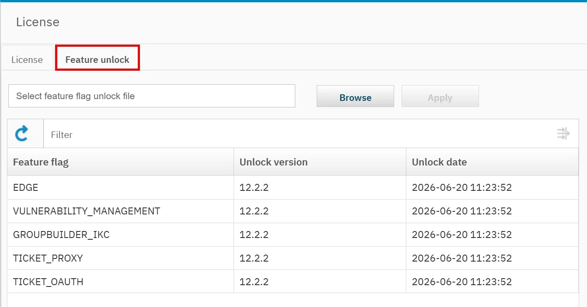
-
To activate the feature flag, run the following command from the cm cli. The VULNERABILITY_MANAGEMENT flag enables an additional UI view that will be used in the later sections of this lab.
grdapi enable_disable_feature_flag flagName=VULNERABILITY_MANAGEMENT action=enable - And confirm operation
grdapi list_feature_flags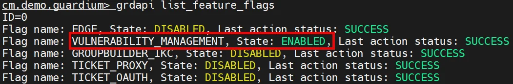


Update VA tests
-
From browser go to Fix Central (https://ibm.com/support/fixcentral/) and look for DPS updates for Guardium 12.2
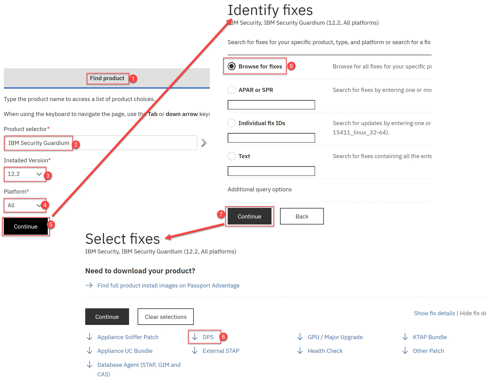
-
In DPS section locate the latest quarter update (position 4 in my case, Q4’25 update) and the latest Rapid Response update (if exists) related to quarter one (position 1 my case). Download this/these file/files.
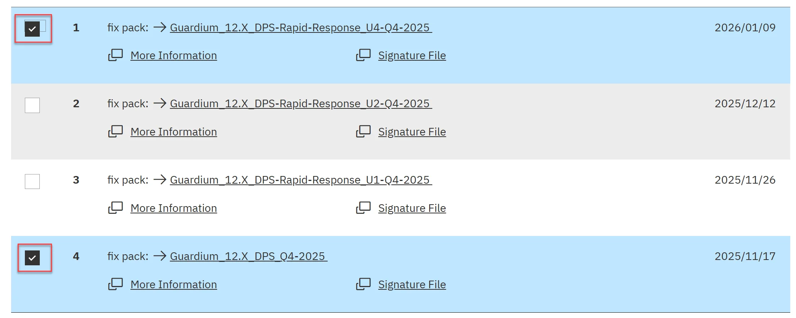
-
Unpack zip file/files. Inside each archive you should have file with
encextension.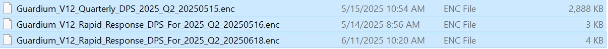
-
Open Customer Uploads view on cm and press Browse button. Select quartely DSP update file and then use Upload button to load it to the engine.
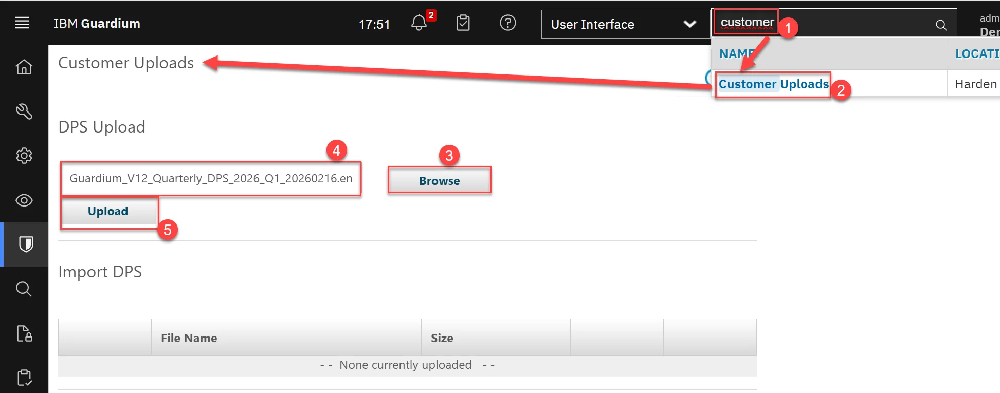
-
Import DPS section will be refreshed and the uploaded file should appear. Press the
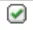
icon to start DPS import – popup with message “Import DPS is in progress …” should appear (wait a while to get pop-up). Close it and wait for next pop-up. It can takes even few minutes.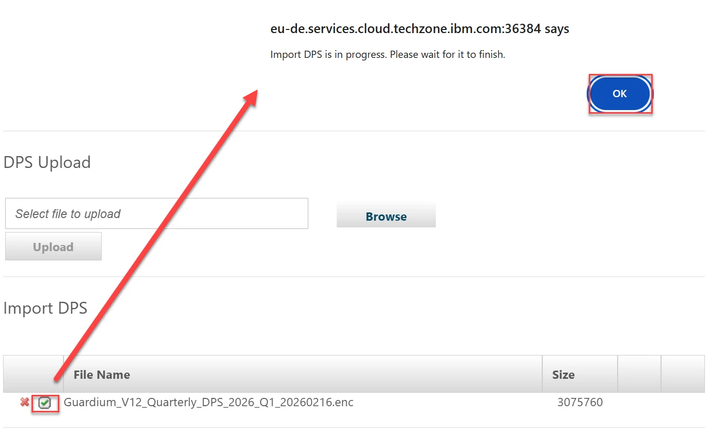
-
Accept the second pop-up with information that DPS import started and notice that message below of DPS Upload section is changed and refers to new DPS file and informs that process is running. If message will not appear, refresh browser tab and check it again.
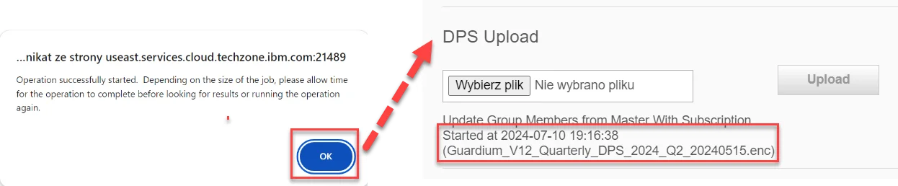
-
You can go back to Customer Upload view after few minutes and notice that DPS import process finished successfully. You can continue lab; there is no demand to have the latest updates. Sometimes DPS import takes hours.
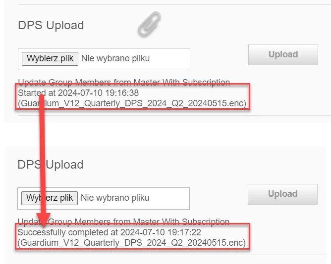
-
If you have Rapid Response update repeat the upload procedure for it according to steps from 4 to 7. You process the rapid update when quarter one is correctly imported


VA roles scripts
Configure VA technical account
- On raptor connect to PostreSQL as superuser and create a new user account (sqlguard) and a new group (gdmmonitor). Assign to the group limited rights to read database configuration only (based on appliance scripts).
1 2 3 4 5 6 7 8 9 10 11 12 13 14 15 16 17
su - postgres psql CREATE USER sqlguard WITH ENCRYPTED PASSWORD '<your_password>'; CREATE GROUP gdmmonitor; ALTER GROUP gdmmonitor ADD USER sqlguard; GRANT pg_read_all_settings TO gdmmonitor; GRANT SELECT ON pg_authid TO gdmmonitor; \q exit
Configure VA for PostgreSQL
-
Open Assessment Builder view on cm and create a new assessment definition (plus icon )
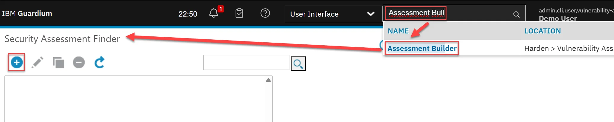
-
Insert new assessment name postgres on raptor and press Add Datasource button
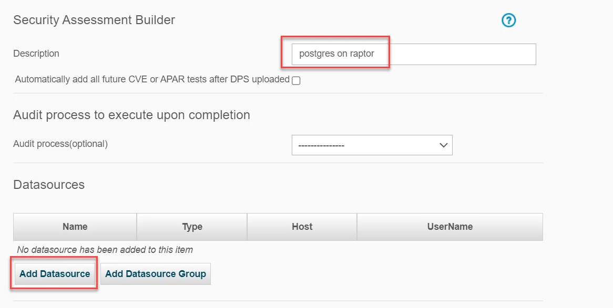
-
In Select datasource list use icon to add new datasource. Insert appropriate valies and Save.
Insert values:
- name: postgres on raptor
- Database type: PostgreSQL
- Shared datasource:
- User name: sqlguard
- Password: <defined in previous chapter>
- Hostname/IP: raptor.demo.guardium
- Port number: 5432
- Database: postgres
-
Now, Test connection button should be active. Press it and confirm that connection to PostgreSQL on raptor is correctly configured. Then Close a Create datasource window.
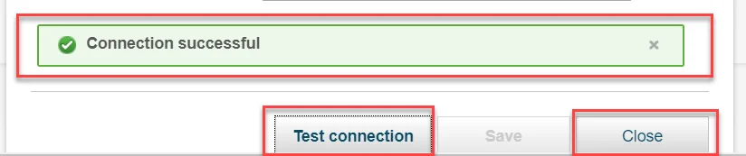
-
Select just created datasource and Save configuration.
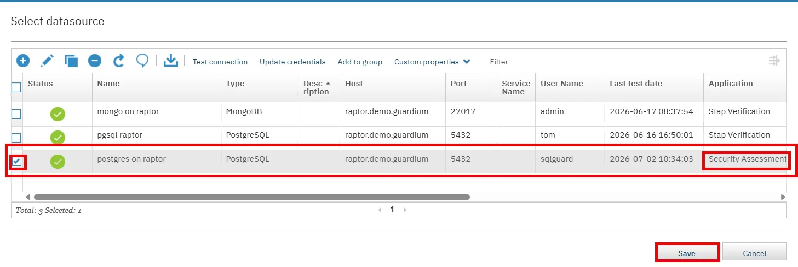
-
You will back to Security Assessment builder main view and just created PostgreSQL datasource should be listed in Datasources section. Apply changes and then Configure Tests button will be activated. Use it.
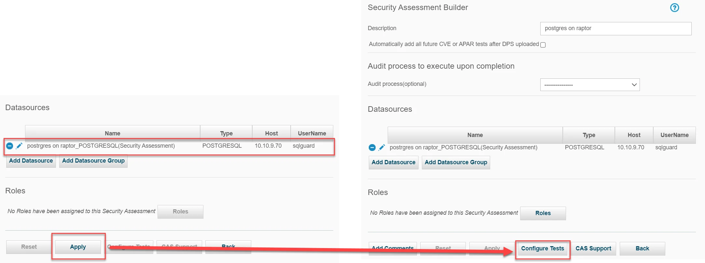
-
The Assessment Test Selections window will appear. Navigate to the POSTGRESQL tab to display all available VA tests for the PostgresSQL database.
Exclude CAS tests by unchecking the Include CAS option, as we will not configure CAS in this lab. Next, select the first test on the list, then scroll down to the last one and select it while holding the Shift key — this will highlight all tests.
Finally, click Add Selections to add the selected tests to our assessment. Please wait until all tests appear in the selection area.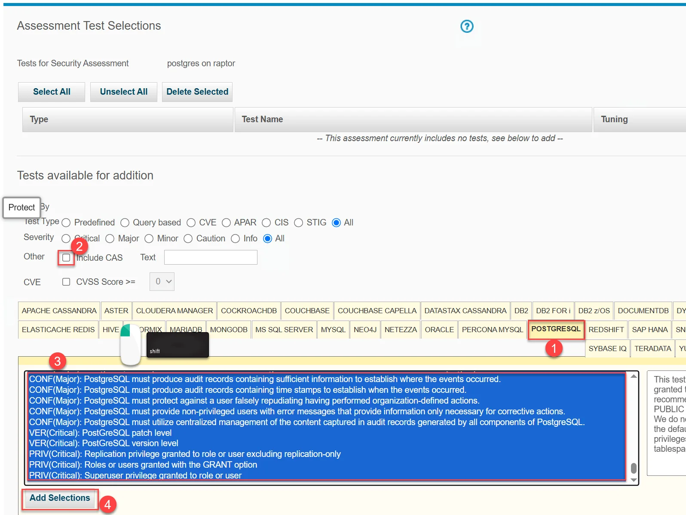
-
As a result all marked tests will be moved to selected tests area. Now we can press Return button.
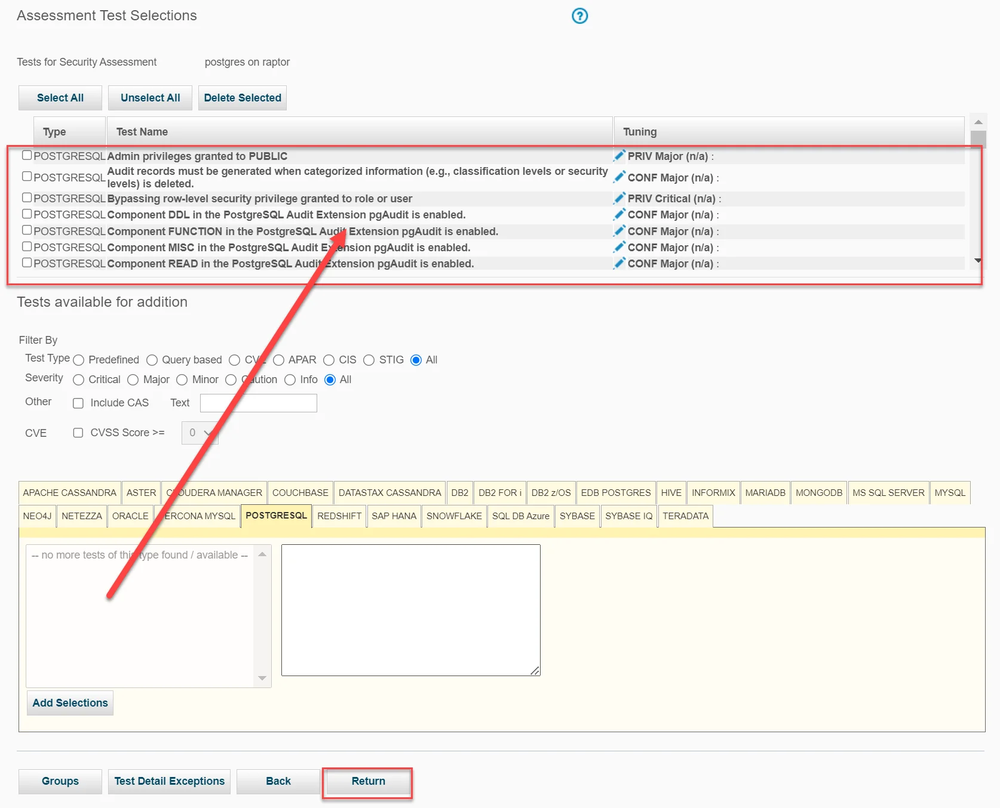
-
To execute just created assessment, select it on a list and press Run Once Now button. The pop-up will inform that we just started assessment instance and its execution can be monitored in Guardium Job Queue report.
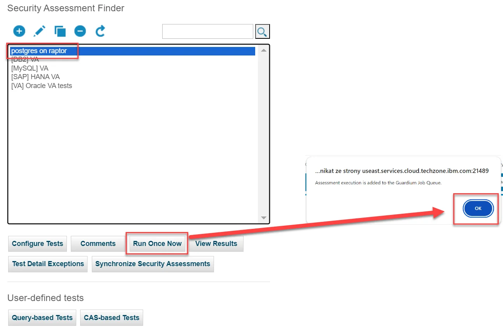
-
Open Guardium Job Queue report and refresh it till status will be changed to COMPLETED (be patient, sometimes the assessment row can disappear for a while).
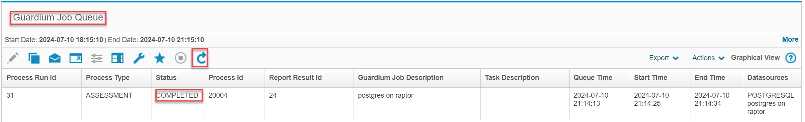
-
Back to Security Assessement builder view and select our PostgreSQL assessment. This time press View Result button to open interactive VA report (you probably need to accept pop-up displayed in the browser).
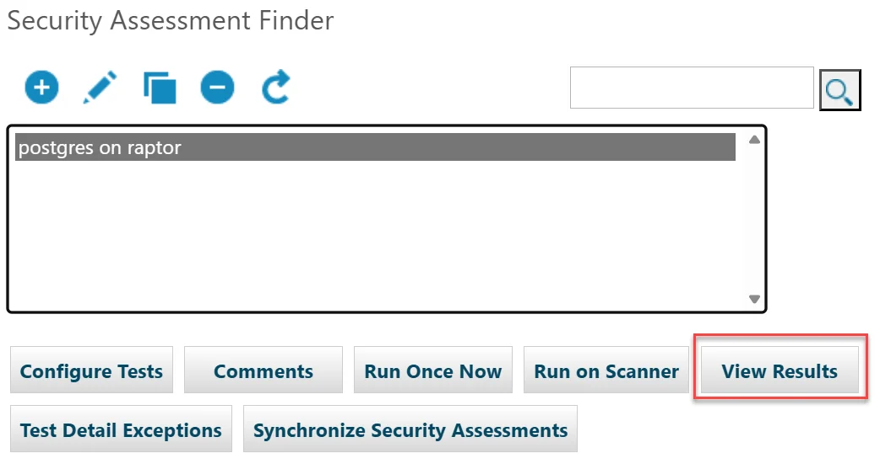
-
Review VA assessment report and close it.
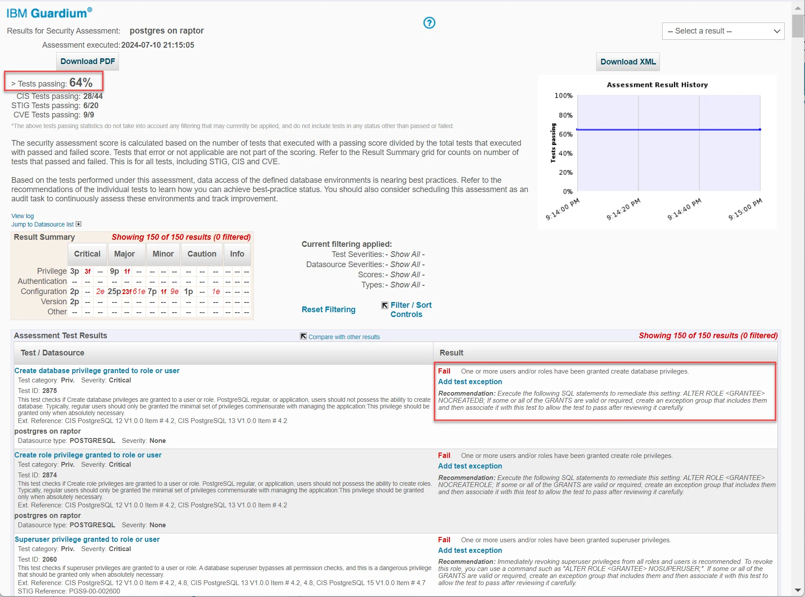


Findings remediation
-
In cm UI open again the result set from the last PostgreSQL assessment. Press View Result when vulnerability assessment - postgres on raport is selected.
-
Look for test – Ensure the pgcrypto extension is installed. This extension allows implement column based data encryption. Unfortunately, it is not enabled in our raptor PostgreSQL instance.
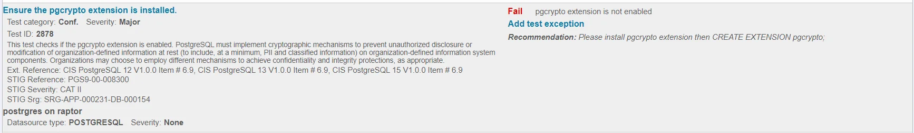
-
To enable the functionality mentioned in the test, log in on raptor to the database and execute the CREATE EXTENSION statement.
su - postgres psql CREATE EXTENSION IF NOT EXISTS pgcrypto; /q exit -
Run again our postgres on raptor VA assessment and check execution completeness in Guardium Job Queue report.
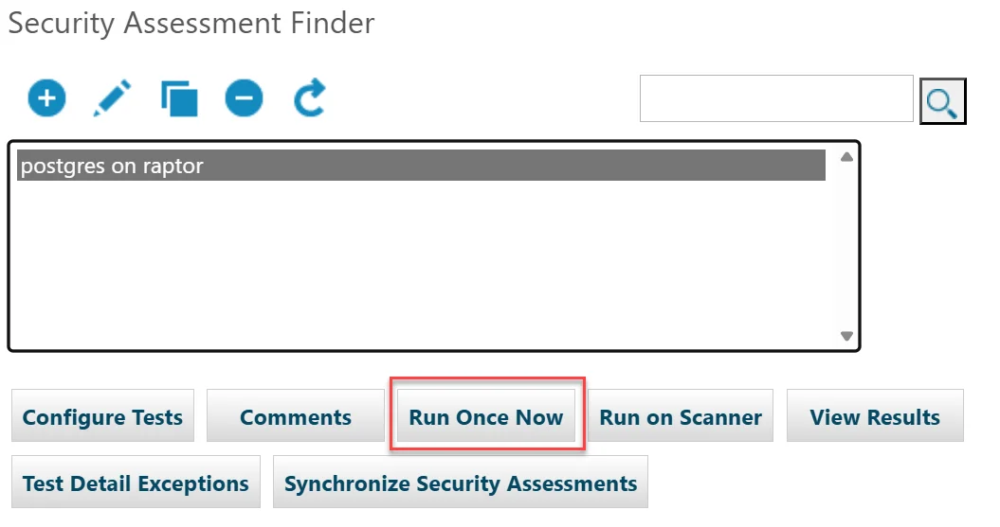
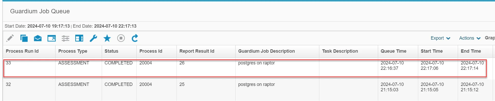
-
Open assessment results and notice that Test passing result has been changed. To find a difference you can press Compare with other results link and select previous execution with lower score. Press Go button.
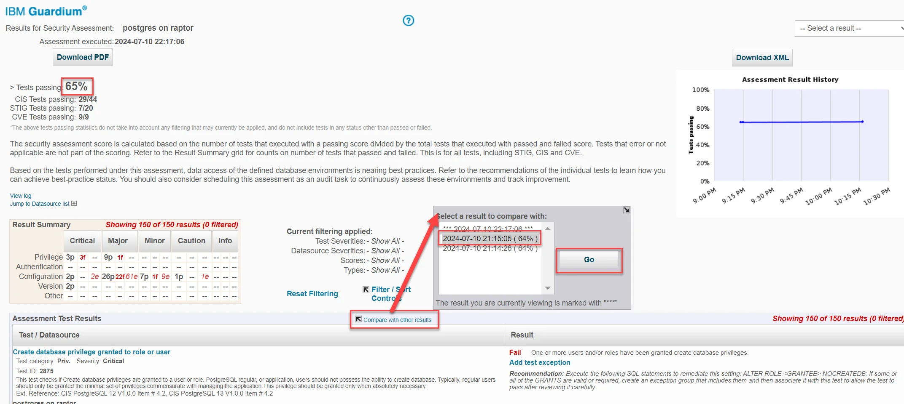
-
Displayed pop-up report identifies that now pgcrypto library test has been passed.
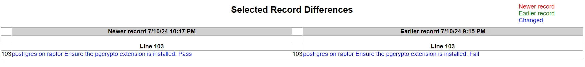


Setup remote VA scanner (optional)
-
Open again the VA Assessment builder and select postgres on raptor assessment. Then use the Run on Scanner button instead of Run Once Now. The pop-up message informs that request is trying to put this task to va scanners queue. If you press OK you should also get confirmation that task is now there.
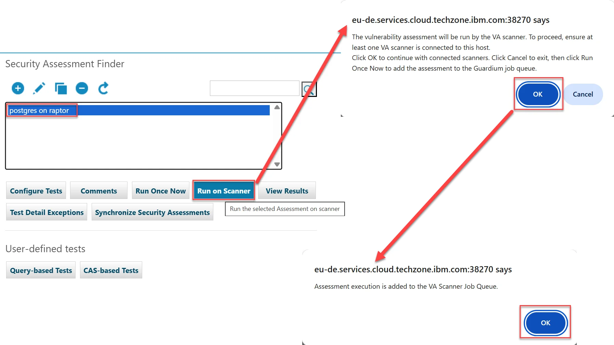
-
Open VA Scanner Job Queue view and notice that a new task is scheduled and it is WAITING for execution. In this case the task will be served by remote scanner which we must deploy first.
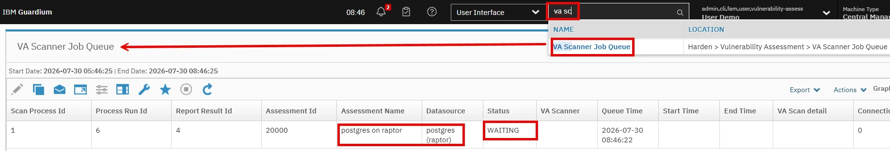
-
We need two pieces of information. First one is appliance UI certificate. In our case we are using cm for VA, so let us get it public certificate. Open cm UI in your browser and save the certificate.
-
Here are the steps for Chrome. Select certificate information just at URL and then Certificate details. Then switch to Details tab and Export to file.
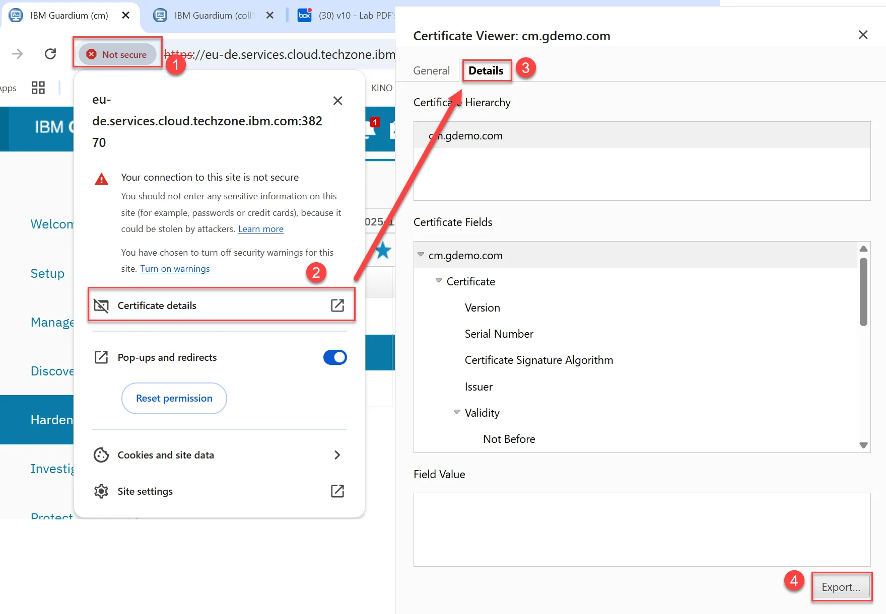
-
Here this same in Microsoft Edge.
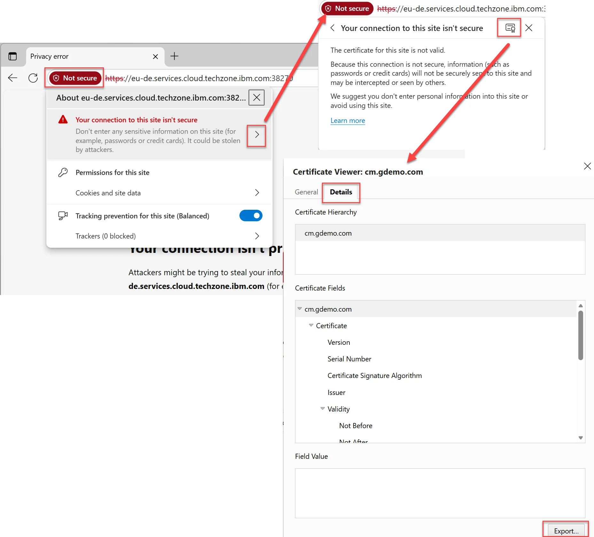
-
Just a saved file should contain the cm UI certificate in a PEM format. Save it on sauropod machine in the directory
/opt/vascanner/certsas avascanner.pemfile. Use this command to create directory on sauropodmkdir -p /opt/vascanner/certs -
The
vascanner.pemfile should look like shown below:cat /root/gn-trainings/vascanner/certs/vascanner.pem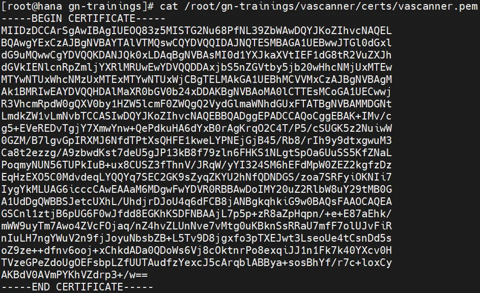
-
Login to cm cli and create a new API key for vascanner.
grdapi create_api_key name=vascanner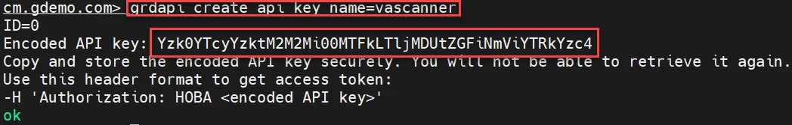
Write down the encoded API key, we need it soon. -
On sauropod login to the IBM container registry and check. The entitlement key is available in the
container_registry.txtfile in training materials.podman login cp.icr.io -u cp -p <ibm_registry_key>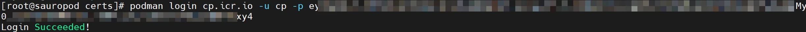
-
Pull VA scanner image on sauropod.
podman pull cp.icr.io/cp/ibm-guardium-data-security-center/guardium/vascanner-12.2.0/va-scanner:vascanner-v12.2.0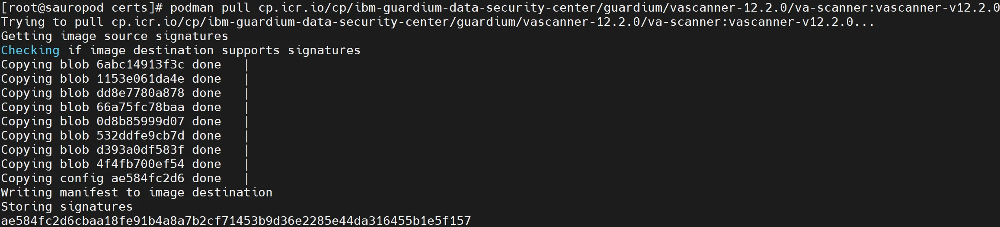
-
Check that image is correctly pulled and wrote down information about image id.
podman images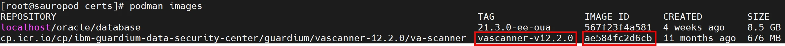
-
Create config file in the
/opt/vascanner/configon sauropod.Inside 4 variables must be set like that:
- GDP_HOST=cm.demo.guardium
- GDP_HOST_PORT=8443
- CLIENT_API_KEY=<encoded API Key from point 8>
- VA_AGENT_NAME=VA_SCANNER_ON_SAUROPOD
-
Now we are ready to start a scanner (insert correct image id)
podman run --network host -d --replace --env-file /opt/vascanner/config --name va-scanner-sauropod -v /opt/vascanner/certs:/var/vascanner/certs <image ID from point 11> -
You can monitor the container status using:
podman ps -a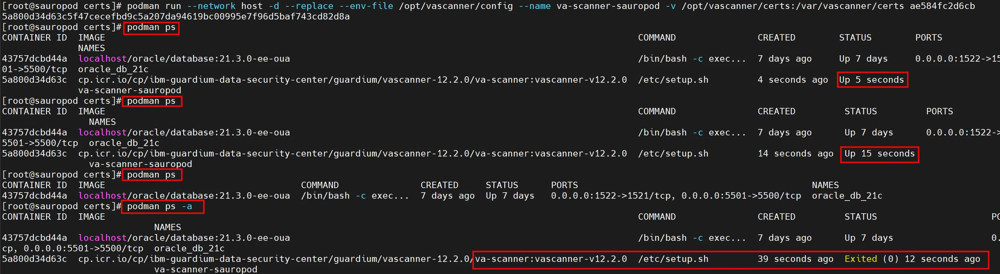
After one minute, even less, the container will stop working (it is expected). -
Check again the VA Scanner Job Queue view in cm UI and notice that job is completed and result set is consumed by VA engine.
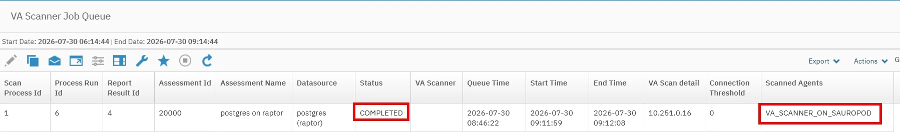
-
You can also check container logs on sauropod/
podman logs va-scanner-sauropod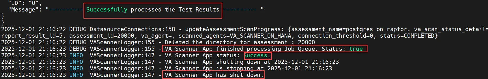


VA findings dashboard
-
If the VULNERABILITY_MANAGEMENT feature flag is enabled on the cm, a new Vulnerability Management view becomes available. This view provides a quick overview of the security posture of the monitored database engines and centralizes vulnerability assessment findings. The charts provide a visual overview of the identified findings, categorized by critical, high, and other severity levels, as well as grouped by database engine type. Below the charts, you can review the findings in greater detail and examine the specific issues detected by the assessment.
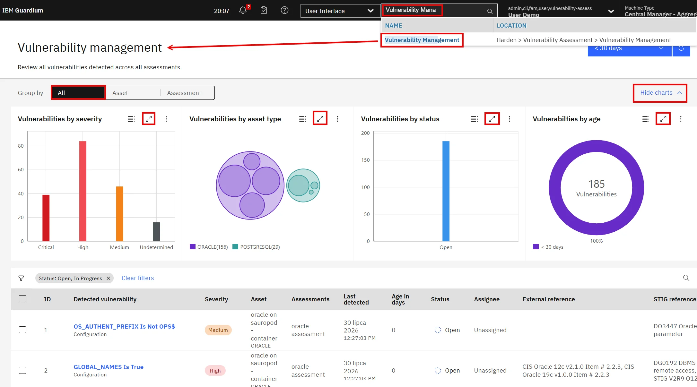
-
Selecting a test from the list opens detailed information about the issue, including remediation guidance, and also allows you to add comments.
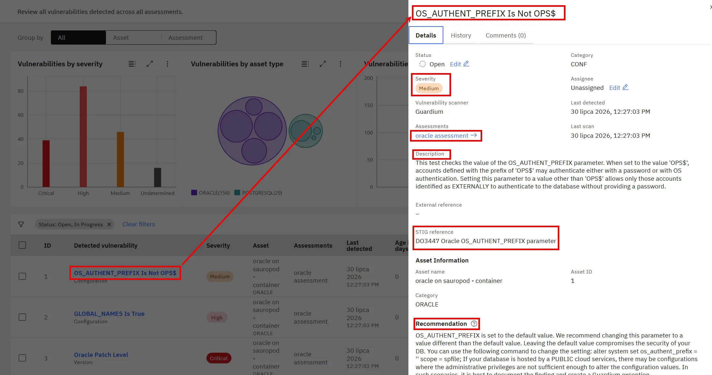
-
The new view can also be used to manage the remediation process by updating the finding status and assigning remediation tasks or other actions to users with Guardium accounts. This lightweight workflow can be a good fit for smaller organizations or serve as a temporary solution before implementing a full-scale remediation process based on exceptions and formal workflow management.
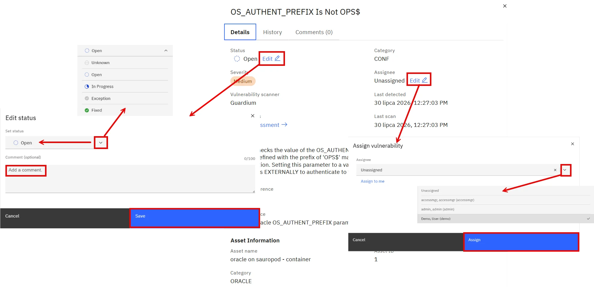
-
Findings can also be reviewed from the perspective of configured data sources (assets) or by examining the results of individual vulnerability assessment processes that have been configured and executed.
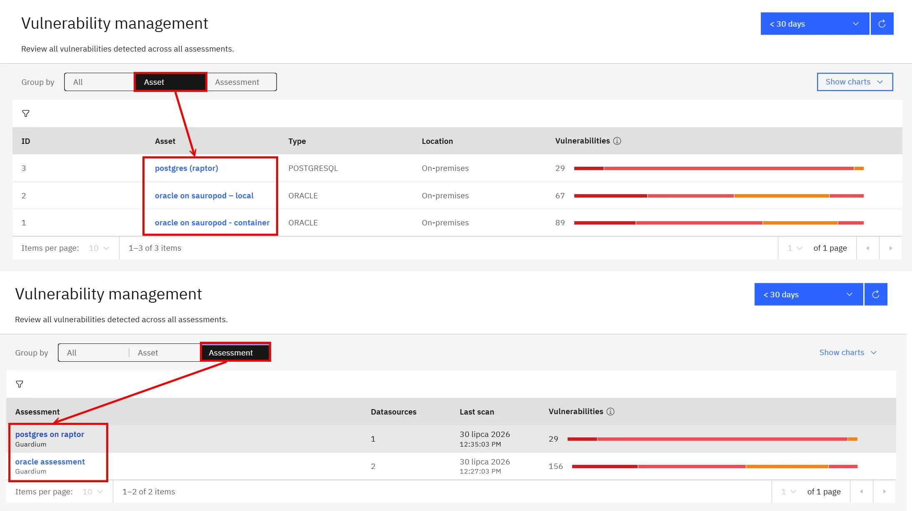


Appendix
Dependencies:
Deliverables from this lab are referred in other, it should be fully followed.
Resources:
- Registry entitlement (use own or ask instruktor to provide one) https://myibm.ibm.com/products-services/containerlibrary
Instructor notes: